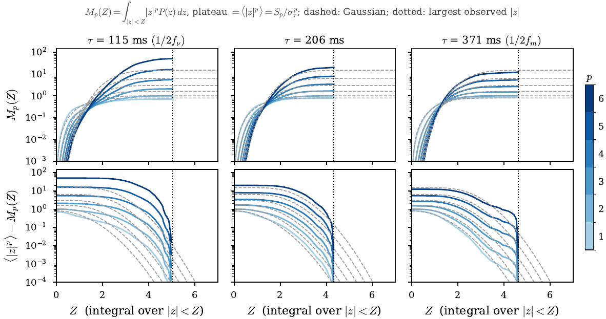
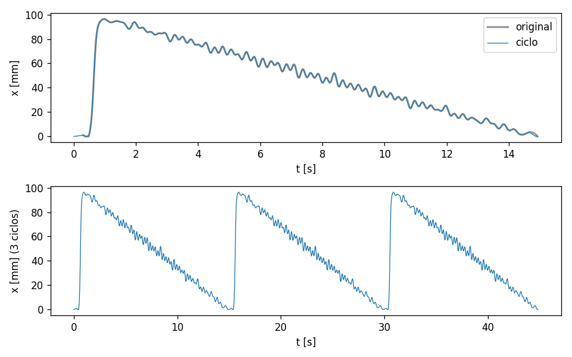

Journal Week 48
Table of Contents
Referencias
2026-11-24
[09:45] Reunión de Labo de hoy: PDF de los incrementos y cumulantes
- Pedido del usuario: solo los gráficos de las PDF, prolijos, y lo de los cumulantes. Presentación en
~/Documentos/Reuniones de Labo/2026-11-24/labo_2026-11-24.pdf(6 diapositivas). - Paneles nuevos, hechos a la medida de la diapositiva, en
Códigos/(pdfs_panel.py,cumulantes_panel.py). Son versiones limpias de las figuras del 17/11 (Día 15, PDF pesadas) y del 20/11 (Día 17), con los mismos datos (S3, JONSWAP principal) y los mismos números. - Diapositivas: (1) P(z) en log en 1/2fν, centro y 1/2fm, dato contra IAAFT y gaussiana; (2) |z|p P(z) para p = 2, 4, 6, con la fracción que ponen los frentes; (3) convergencia: integrandos normalizados, |z| máximo y eventos con |z| > 4,5 (9 / 0 / 1); (4) κ3–κ6 contra τ y tabla en los tres τ; (5) log-cumulantes C2, C3 y ζp (c2 = −0,23 ± 0,02 en el dato contra 0,00 ± 0,02 en el IAAFT).
[11:25] Integral parcial de la PDF pesada, sin normalizar
- Pedido del usuario, sobre la integral acumulada del 20/11 (
Tercera iteración/Día 17/Figuras/integral_acumulada.pdf): la misma integral, pero sin dividir por ⟨|z|p⟩. Script~/Documentos/Reuniones de Labo/2026-11-24/Códigos/integral_panel.py→Figuras/P_integral_sin_normalizar.pdf(todavía no está en la presentación). - Arriba Mp(Z) = ∫|z|<Z |z|p P(z) dz, que llega a la meseta ⟨|z|p⟩ = Sp/στp; abajo lo que falta, ⟨|z|p⟩ − Mp(Z). Gris: la gaussiana exacta, ⟨|z|p⟩G · P((p+1)/2, Z²/2). Punteada: |z| máximo medido. S3, JONSWAP principal; τ = 115 / 206 / 371 ms.
- Así se ven directamente las mesetas contra la gaussiana. En 1/2fν: p = 6 llega a 50 (gaussiana 15) y p = 4 a 5,5 (gaussiana 3). En 206 ms: 20 y 3,4. En 1/2fm quedan por debajo de la gaussiana (12 contra 15; 2,7 contra 3), con el escalón del evento único en |z| ≈ 4,5.

[11:27] Cuarta iteración, Día 2: llenado de la cuba para los videos
- Se está llenando la cuba con agua destilada (el plan del Día 1 decía agua de la canilla). Arrancamos temprano; el llenado tarda aproximadamente una hora más (lista hacia las 12:30).
- Hoy se filma la ola rompiendo con la rampa nueva (plan en
Cuarta iteración/Día 1/README.md). Todo lo de hoy va enCuarta iteración/Día 2/(Videos/,Códigos/,Figuras/; registro en el README).
[11:35] Curvas de forzado para los videos, en el pendrive
- En
KINGSTON/Posgrado/Pruebas rampa impresa 3D cuba grande/Cuarta iteración/Día 2 (24-11) Videos/(verificadas byte a byte; una columna en mm, sin encabezado):639960ms_bonneton_C3_h_20cm_Tp_1.07_Hm0_42.9mm_seed_1_una_curva.csv: JONSWAP principal (“h20”), el mismo del 20/11.599962ms_bonneton_C3_h_3.5cm_Tp_0.45_Hm0_7.5mm_seed_1_fhi_2.5fp_una_curva.csv: JONSWAP con la profundidad real (el deBonneton_bien_profundidad_360, 13/10). Se escaló para h = 3,5 cm en la paleta, que era el nivel 3,60 cm en el punto de referencia de ese montaje. A confirmar con el nivel de hoy.14940ms_un_salto_random_3_curva_04.csv: un solo salto de los muchos forzados (curva 04 de Curvasrandom3: A = 96,6 mm, subida en ~0,7 s, vuelta lineal). Empieza y termina en x = 0, así que se puede repetir en loop (período 14,94 s).119520ms_…_x8.csves el mismo ciclo 8 veces (≈ 2 min). Generador:Cuarta iteración/Día 2/Curvas forzado/generador_un_salto.py.267740ms_quieto_90s_triangulares_random_3_177s.csv: 90 s quieto (sirve de fondo para el video) + 177 s de muchos forzados (12 triangulares), la curva corta del 14/10.
- Plan de tomas: un video por cada JONSWAP, uno de muchos forzados y después varios solo del rompimiento del salto único, a más resolución, para ahorrar espacio y tiempo.

[11:50] Disco externo para los videos: DEX5
Se probaron los discos externos del Labo (catálogo DEX). Espacio libre y escritura secuencial medida con 1 GB (
ddconconv=fdatasync, archivo temporal borrado):Disco Modelo Libre Escritura [MB/s] DEX1 Seagate Expansion 1 TB 170 GB 37,6 DEX2 Seagate Backup+ SL 1 TB 40 GB no confiable DEX3 Seagate Backup Plus Slim 2 TB 405 GB 46,6 DEX5 WD Elements 2 TB 1,3 TB 43,4 - Los cuatro son HDD con NTFS y USB 3.0; ninguno informa la velocidad por sí mismo. DEX4 estaba en uso.
- DEX2 se desconectó del USB durante la prueba (errores de escritura y reset). Se desmontó, se volvió a montar (limpio) y se borró el archivo de prueba; sin errores nuevos.
- Elegido: DEX5 (el que tiene más espacio; la velocidad es parecida a la de DEX3).